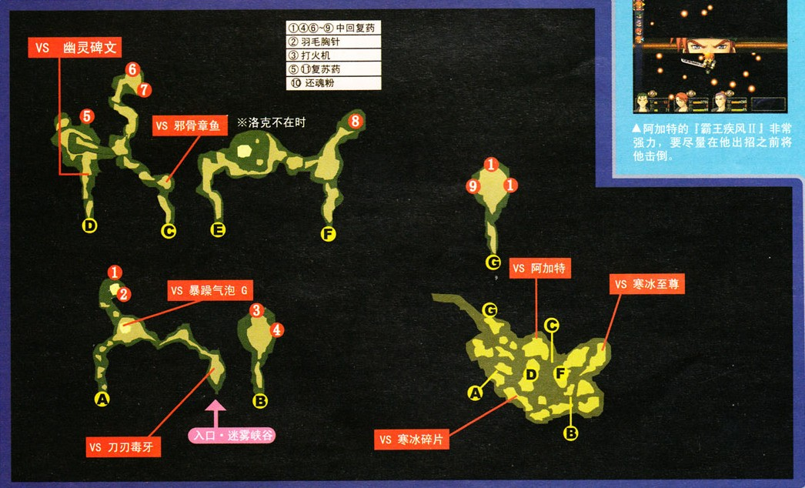

3rd部分门详解
序
这是将原攻略中的部分门的内容提取出来单独开的一个页面，只要是为了防止一些比较大的门放在攻略正文中影响主线的阅读。
跳转链接
点击即可跳转到对应说明处。
星之门①&星之门⑤&月之门①(后篇)
都是在一段剧情后进行一场战斗。星之门①是尤利亚对穆拉，穆拉会在开始后第一次与第21回合使用两次破邪显正，必须用战技挡住。全部魔法用来回血，基本上在全部资源耗尽前后就可以完成战斗。本战失败只影响剧情对话和星杯手册的死亡记录，不影响奖励。
星之门⑤是亚妮拉丝对理查德。难度低于星之门①。战斗方法类似于星门①，开场后保持有风花阵状态即可。注意理查德的S战技后立即回血。胜利的话会得到这期间最强大的武器——利剑·迅羽（亚妮拉丝专用），PSP版的迅羽还可以通过带亚妮拉丝参加武术大会噩梦模式强化，强化后的迅羽将比最终武器还要强大。
月之门①后篇更简单，是阿加特对导力装甲的两连战。第一战敌人很弱，注意积攒CP即可，战斗后HP/EP自动回满。第二战对暴走的导力装甲，敌人攻击有所强化，多用延迟战技就比较容易了。
星之门⑥
【星之门⑥】进入时需要料理手册有20条以上记录，平时要多开宝箱，并且使用料理之后才能学会料理。这个门内战斗不少，可以有时间的时候来玩。这里的可控角色是渡鸦帮三人组。

这个门里面不能使用魔法，跟维姆拉大叔对话可以吃到地狱极乐锅，效果跟SC一样，随机一个人HP变为1，CP变为零，另外两个人CP变为100。路上的怪难度不是很大，注意敌人的冰冻攻击，每个人都要靠技能帮助同伴回复。最后战斗打阿加特，给阿加特减DEF，给我方队员加STR，这场战斗难度还是不算大。（PSP据说困难以上难度开头就会有一个打火机，另外图中所有装有打火机的宝箱都会装有打火机+）
星之门15
队伍中有玲就能进入，这段剧情不同的版本有不同的内容，具体的问题这里就不细说了，建议想多了的同学去玩玩零之轨迹，那里面对这个问题有明确解答。
//请认真决定要不要看下面的文字//
星门15不同版本的区别：PC日文版、中文PC/PSP反HX版是完整版；
中文教育版等和谐版去掉了一张不和谐图片
日文PSP版、中文汉化原版缺失了更多的内容。
星门15全文字收录：
汝，身受世间黑暗之宠爱的少女
到我身边来吧。
如此，[门]将开启。
※
那些超越善与恶、生与死的所在。
我都曾淡然地走过。
无所幸，无所不幸。无所悲，亦无所喜。
白与黑撕裂了我，天与地强暴了我。
我已变得污秽不堪。
从何处开始，又将在何处结束。
我不属于任何地方。
我从不曾行走过。
只是，世界在旋转。
1.乐园
声音：请问要点几号？
声音：15号。
声音：我明白了。
声音：[铃]，该你表现了。可别让客人失望哟。
————————————————————
那里被称为《乐园》。
店馆应该是有名字的。
可是我们从未被告知。
当然，我们不知道乐园究竟在哪儿。
也不知道我们究竟在做些什么。
甚至，不知道我们为何会在这里。
————————————————————
声音：早安。
？？？：………………
声音：早安，15号（玲）。
玲：……………？？
少年：啊，你终于起来了。
玲：…………[克罗斯]。
克罗斯：呵呵……
克罗斯：欢迎来到乐园，[玲]。
…………欢迎来到、《乐园》。
克罗斯：玲，我要去工作了喔。又被叫到了。
玲：克罗斯，又要去工作了？
克罗斯：没关系的哟，玲。马上就又会见面了。
克罗斯：在那之前，你可要乖乖的哟？
名叫克罗斯的少年，一如既往地出去忙他的工作了。
在我所不知道的地方，他好像每天都重复着他那凄惨的工作。
不，其它的孩子也都一样。
在我所不知道的地方，孩子们都在工作着。
—————————————————————
不知为何，我一直没有工作。
没错，我一次都没有工作过。
明明别的孩子在逐渐衰弱、消瘦下去，却只有我一个人吃着好吃的东西，只要和玩偶玩耍便可以了。
只有我一人，是特别的。
……克罗斯，他叫我"公主"。
——————————————————————
少女：早安，玲。今天天气也很好呢。不过通风很差哟。把窗户打开吧！
这个朝气蓬勃的孩子叫做艾塔。
总是笑咪咪的，好奇心旺盛。喜欢在房间里到处冲来冲去，因此总惹克罗斯生气。
艾塔：呐，玲。一起玩吧？我也好想玩玩偶游戏呢。
玲：我是无所谓啦，但是艾塔，你的工作呢？今天没穿那种奇怪的洋装，没关系吗？
艾塔：今天休息。因为有克罗斯出去嘛。
艾塔：呵呵，那孩子最近的指名又增加了哟。是因为他比较符合社会需要吗？
艾塔是个有些随性的女孩。有一边呵呵笑着一边说无聊笑话的癖好。
——————————————————————————————
爱杰是个有些成熟的楚楚可怜的女孩子。因此经常被大叔们指名。
但是爱杰从来不会摆出厌恶这一切的表情。而且总是出色地完成工作。
玲：爱杰，你不讨厌工作吗？非常痛的吧？
爱杰：……没关系。玲不需要在意这些。
爱杰：有不少窍门在的。掌握了的话其实很简单的哟。
爱杰：玲不用担心这种事情。因为玲你，一直很幸福。
玲：……………嗯。
爱杰：这样就可以了。只要玲觉得幸福，我也会很幸福的。
——————————————————————————————
卡特尔，总是遭人殴打的孩子。因为身材十分瘦小，他总是被人当成玩偶一样玩弄。
玲：呐，卡特尔，卡特尔！你是不是又挨打了？
卡特尔：嗯、嗯……我也不清楚……
卡特尔：他们说那是新游戏。我也不清楚……
玲：……………………
卡特尔：啊，没关系的啦，玲。我没事的，完全没事哦。
卡特尔：这已经是很平常的事了，我已经不会痛了哟。只要有玲在的话就完全没事了。
——————————————————————————————
卡特尔总是在看不见的地方流着血。
那大概是，诅咒的一种。
美丽的人所流的血，一定也会很美丽。
——————————————————————————————
克罗斯：我回来了，玲。这次稍微去得久了些呢。
然后是克罗斯。他就是我们的领头人。
克罗斯、艾塔、爱杰、卡特尔、以及我……
总在同一个房间里生活着的，无可替代的伙伴们……
似乎还有着别的孩子在，不过那对于我来说都无所谓。
——————————————————————————————
我们五个人一起，住在乐园里。
2.公主
玲：呐，克罗斯。其它人呢？
玲：为什么房间里只有玲跟克罗斯在呢？
克罗斯：哈哈哈，你在说什么啊，玲。
克罗斯：打从一开始这里就只有我们两人而已。只有我们两人住在这里而已哟。
玲：……是…这样吗……
克罗斯：是啊。从一开始就是只属于我们两人的世界。
——————————————————————————————
后来我才发现，将其他人藏起来的，正是克罗斯。
是为了让我不去在意吗？还是说发生了我不可以直视的状况？
我发现克罗斯总是遮住我的眼，让我什么也看不到。
——————————————————————————————
艾塔：玲，教你个好东西。叫做[是，我很乐意]哟。
艾塔：这样的话就会变得十分乐意哟。
[是，我很乐意]
[是，我很乐意]
艾塔：不管被做了什么都要说[是，我很乐意]。这样大家都会高兴哟。
艾塔：呵呵，很奇怪吧？明明高兴的只有客人而已的。
爱杰：我也教你一件事。是个非常棒的方法。
爱杰：呐，要想象对方的感觉。一定觉得很舒服吧，刚刚感觉到了吧，等等。
爱杰：虽然疼痛还是无法避免，不过会变得不介意讨厌的事情哟。
爱杰：勉强自己是不行的。一定要认真考虑，怎样才能让对方高兴呢。
卡特尔：那，我、我也……
卡特尔：呐，绝对不可以不可以哭着说[对不起]哟。
卡特尔：因为说了[对不起]的话，只会被揍得更厉害。
卡特尔：不管再痛再难过也不能哭。因为就算说了[对不起]也不会被原谅。
玲：大家，谢谢你们。不过玲觉得玲用不着这些。
玲：因为玲都接不到工作的。
玲：我一直都在这里抱着玩偶。玲，一直都在这里哟。
克罗斯：没错。玲。
克罗斯：你是我们的公主，十分十分重要的人。
——————————————————————————————
我们会保护你的。所以你什么都不需要看哟。
3.游戏
克罗斯：玲，你在做什么？
玲：在画画哦。
玲：你看，这是怪兽。是把玲跟大家关起来的怪兽哟。
玲：金色的眼睛，漆黑的鳞片。嘴巴呢，则是被那些它吃掉的人类的颜色染红了。
克罗斯：罪恶的颜色吗。真不错呢。
玲：不过只有肚子一定是全白的。不然的话就分不出来哪边是前面了嘛。
克罗斯：哈哈，没错呢。肚子一定是白的。
玲：呐，克罗斯。其他人呢？大家都出去工作了吗？
克罗斯：……玲。
克罗斯：这里从一开始就只有我们俩而已哟。
玲：……是…这样的吗……
克罗斯：是这样的哦，是我们的世界。
克罗斯：只属于我们两人。来吧，来画画吧。
克罗斯：接下来画个公主吧。
————————————————————————————
尽管克罗斯十分擅长隐瞒事情，但我还是明白了一些事情。
克罗斯他，已经很累了。
这也是因为"其它的大家"都不在了的缘故吗？
所有的指名都由克罗斯一人接下了。
然后克罗斯也开始，开始消失了。
克罗斯：玲，我帮你擦擦身体吧。今天似乎脏得很厉害。
玲：一直以来谢谢你了。克罗斯真是温柔呢。
克罗斯：……玲。
克罗斯：对不起，玲。都是因为我做得不够好。
克罗斯：明明说过要保护你的……
玲：克罗斯？……怎么了？脸色很差哟。
克罗斯：没什么。没什么哟。
玲：……克罗斯？
克罗斯：………………。
克罗斯：不是说了没什么的吗！？
克罗斯：…………是你的错。
玲：…………克罗斯……
克罗斯：是你的错，全部都是你的错。
克罗斯：明明立刻就杀了别的人。为什么只让我一个人活下来了。
克罗斯：是你的错。因为你没杀了我。
是你的错。因为你没杀了我。
是你的错。因为你没杀了我。
明明我也，早就已经死了的。
4.玲
然后，"第一份工作"到来了。
因为已经没有人在了。
能够代替我出去的孩子。
所以我必须要去工作了。
……我第一次，出去了外面。
——————————————————————————————
支配人：玲，该你表现了。可千万别让客人失望哟。
玲：……………………
支配人：怎么了，玲。像平时一样做啊。
玲：……………………
客人：喂，实际见到了怎么跟说的不一样啊。不是说15号是特别的吗？
支配人：真奇怪啊。平常真的是个听话的孩子呀。
支配人：不管客人有怎样的爱好都能够满足他们，特别棒的天使哟。
支配人：好了，玲，打个招呼。平时不也都这么做的吗？
支配人：今天要选哪个做？可怜的玩具？还是酷酷的男孩子？
玲：……不是…我。
支配人：诶……？
玲：不是我。
不是我。
玲：不是我！不是我！
玲：那些都不是我！
玲：都不是我！
有谁在说着什么，我就如往常一样堵住了耳朵。
有谁在做着什么，我就如往常一样闭上了眼睛。
我就如往常一样。
我就如往常一样。
我就如往常一样。
——————————————————————
我就如往常一样，出去，工作了。
啊啊，是[命之水]。
克罗斯说过的，就算是濒临死亡的人也会变得精神起来。
他们时常让克罗斯喝的。
特别甜的，糖浆的味道。
支配人：来，玲。今天加了很多糖浆哟。
支配人：慢慢地喝干。慢慢地，对对，别漏出来了哟。
支配人：慢慢地把它喝干吧。
支配人：……那么，请慢享用。
支配人离去的时候，头似乎稍微偏了点诶。
是因为已经上了年纪了，还是一种变装呢？
………………啊啊，药开始起效了。
———————————————————————
客人：来，小玲。坐下来讲话吧。
玲：是，我很乐意。
客人：嗯嗯，不错的回答哦。
是，我很乐意。
是，我很乐意。
是，我很乐意。是，我很乐意。
是，我很乐意。是，我很乐意。
是，我很乐意。是，我很乐意。
———————————————————————
早安，玲。今天天气也很好呢。不过通风很差哟。把窗户打开吧！呐，玲。一起玩吧？我也好想玩玩偶游戏呢。今天休息。因为有克罗斯出去嘛。呵呵，那孩子最近指名又增加了哟。是因为他比较符合社会需要吗？玲，我教你个好东西。叫做[是，我很乐意]哟。这样的话就会变得十分乐意哟。[是，我很乐意][是，我很乐意]不管被做了都要说[是，我很乐意]。这样大家都会高兴哟。呵呵，很奇怪吧？明明高兴的只有客人而已的。我们会保护你的。所以你什么都不需要看哟。 [玲]
没关系。玲不需要在意这些。有不少窍门在的。掌握好了的话其实很简单的哟。玲不用担心这种事情。因为玲你，一直很幸福。这样就可以了。只要玲觉得幸福，我也会很幸福的。我也教你一件事。非常棒的方法。呐，要想象对方的感觉。一定觉得很舒服吧，刚刚感觉到了吧，等等。虽然疼痛还是无法避免，不过会变得不介意讨厌的事情却哟。勉强自己是不行的。一定要认真考虑，怎样才能让对方高兴呢。我们会保护你的。所以你什么都不需要看哟。 [玲]
嗯、嗯……我也不清楚……他们说那是新游戏。我也不清楚……啊，没关系的啦，玲。我没事的，完全没事的。这已经是很平常的事了，我已经不会痛了哟。只要有玲在的话就完全没事的。那，我、我也……呐，绝对不可以不可以哭着说[对不起]哟。因为说了[对不起]的话，会被揍得更厉害。不管再痛再难过也不能哭。因为就算说了[对不起]也不会被原谅。我们会保护你的。所以你什么都不需要看哟。 [玲]
玲，你在做什么？罪恶的颜色吗。真不错呢。哈哈，没错呢。肚子一定是白的。……玲。这里从一开始就只有我们俩而已哟。是这样的哦，是我们的世界。只属于我们两人。来吧，来画画吧。接下来画个公主吧。………………。不是说了！没什么的吗！…………是你的错。是你的错，全部都是你的错。明明立刻就杀了别的人。为什么只让我一个人活下来了。是你的错。因为你没杀了我。是你的错。因为你没杀了我。是你的错。因为你没杀了我。明明我也，早就已经死了的。 [玲]
玲：大家…都不见了。
————————————————————————
银发的青年：这是……
银发的青年：……那群垃圾。
黑法的少年：……………………………………
黑发的少年：……就算变成了这样，人类还是能活下去吗……？
黑发的少年：…………这样，也算是活着吗……？
银发的青年：………………………………
银发的青年：……这无数的十字伤痕。是她自己划上去的。
银发的青年：恐怕是为了保护自己而必须的吧。
黑发的少年：……………………………………
黑发的少年：……就算这样，也仍然想活下去吗……
黑发的少年：（这是，活着的人类吗……）
黑发的少年：莱维，我想要看这个孩子真正活着的模样。
黑发的少年：我能将她带回结社吗？
——————————————————————————
5.梦的延续
玲很强。
约修亚有一天这么说道。
…………这曾是我不知道的词语。
玲很强。
没错。玲很强。
玲很强。玲很强。
玲很强。玲是很强的！
执行者候补[玲]比任何人都要优秀。
然后，不知何时，约修亚不见了。
依然如同以往，世界在旋转。
——————————————————————————
玲：啊……约修亚真是的，到底去了哪儿。
玲：虽然说了是去工作。可是似乎真的去了很久了。
玲：难得玲正式成为了[执行者]的说……
玲：而且……还想要把真正的[爸爸和妈妈]介绍给他的……
玲：…………………………
玲：……呵呵，不过没关系。
玲：约修亚的话一定会没事回来的说。
玲：回来后……会把那些风土人情讲给玲听。
玲：没错…………只要他想回来的话，任何时间都可以……
———————————————————————————
婴儿：……哇哇……
婴儿：哇哇！哇哇！
玲：…………婴儿？
玲：呵呵…真可爱……
玲：……真是，美丽呢。
……那是全新的生命。
纯白且纯粹，无与伦比的美丽的存在。
那个孩子一定是个好孩子吧。
会被健健康康地养大，成为一个出色的人吧。
虽然对我来说不可能了。
对我来说，已经不可能了。
不知名的婴儿啊，
请你一定要幸福。
———————————————————————————
玲：…………………………………………
玲：……………………………为……什么…………？
眼熟的男子：真是可爱啊。和你长得一模一样。
眼熟的男子：啦啦~乖~~乖~~
眼熟的女子：呵呵，虽然前一个孩子发生了那种事情……
眼熟的女子：但是真是太好了。女神还是没有舍弃我们啊。
眼熟的男子：喂喂，不是约好了不再提那件事的吗？
眼熟的男子：以前的事就忘了吧。
眼熟的女子：哎哎……虽然很伤心，不过那样也是为了那孩子啊。
婴儿：哇，哇哇……
曾经见过的女子：啊——乖乖，乖孩子哟~~。
————————————————————————————
[玲]。
染上污秽的孩子们。
以前的事。
发生了那种事情的前一个孩子。
是这样…的吗。
玲是 这样的 啊。
一开始也是。
玲是
玲是
玲是
玲是 被 生 下 来 的。
————————————————————————————
青年的声音：……玲。
玲：……啊………………
玲：…………莱维…………
剑帝莱维哈特：……………………………………
剑帝莱维哈特：我们《执行者》的全部行动都是被允许的。
剑帝莱维哈特：想要把那两人怎么样……都可以随你喜欢。
剑帝莱维哈特：虽然，他们是否有一砍的价值倒是个疑问……
————————————————————————————
那些超越善与恶、生与死的所在。
我都曾淡然地走过。
无所幸，无所不幸。无所悲，亦无所喜。
白与黑撕裂了我，天与地强暴了我。
我已变得污秽不堪。
从何处开始，又将在何处结束。
我不属于任何地方。
我从不曾行走过。
只是，世界在旋转。
在我所不知道的某个地方，只有世界在旋转……
那么——这样就可以了。
因为世界无论何时
都是为我而转动着。
所以……
我没什么好哀伤的。
————————————————————————————
玲：……呵呵………
玲：呵呵，我才不管那些假爸爸假妈妈呢。
玲：我还有真正的爸爸妈妈的说。
玲：……啊………………
玲：……好冷…………
玲：…………………………………………………
玲：谢谢你，《帕特尔?玛特尔》（爸爸与妈妈）。
玲：没错，这也不坏。这也不坏啊。
玲：玲一直都是很幸福的。一直都是很快乐的。
玲：因为铃是……
——————————————————————————————
世界并不是以玲为中心旋转着的。
也不是为了配合玲而不断改变着。
呵呵，这不是肯定的事吗。
是因为我喜欢玲你啊。
我什么都不会说…………
……玲要用自己的心去感受，去判断。
——————————————————————————————
玲：……………………
玲：……差不多快天亮了呢。
玲：走吧。《帕特尔?玛特尔》。
玲：目的地是克罗斯贝尔……
玲：到了一定高度就切断推进器转换成飞翔机关吧。
Episode [乐园的少女]
～Fin～
月之门②
主角雪拉，可控后前往艾德尔百货店、冰淇淋店、经过南街区前往北街区的旅馆，接着发生强制战斗，难度不大，注意保护NPC。通过下水道前往西街区，这里没必要练级，小怪能避开就避开。剧情后在前往王城门口的路上发生两场剧情战，第一战注意集中火力；第二战不要攻击绅士打扮的男子(似乎会导致结算时不计算本次战斗获胜,导致手册上战斗次数比胜利次数多1)，只需要击败黑衣人战斗就会结束。战斗后剧情，月之门①结束，得到4000mira和回路"天眼"。注意这个门里面可以看到很多著名NPC们在六年前的活动。（王都东街区，休息处[就是FC终章最后一段剧情触发地]可以见到奈尔&朵洛希这对活宝第一次相遇的情景，随后两人还会去百货店；百货店门口还会遇到安敦&利库斯这对老友，按照轨迹世界的时间轴，这应该是这批人物第一次出场）

月之门③
主角科洛丝，剧情中的任务就是不断的找人。第一次到社会系教室、礼堂舞台左侧厅、男子宿舍一层、旧校舍门口发资料；接着去社团大楼女子衣帽间；去礼堂2F；去校长办公室办理通行证之后出校门；去主楼门前；控制乔儿去宿舍二楼，剧情选项随便选；控制科洛丝去礼堂右侧房间、男生宿舍、社团大楼学生会办公室调查窗子即可完成剧情。
月之门⑤
进入条件是手中有回路"幸运"（在训练场宿舍二楼宝箱内得到，当然如果你有卖回路的习惯的话我无话可说= =）剧情很长很有爱。人物可控后去海边，调查沙滩上所有带感叹号的地方（仔细找全）左边还有一个宝箱也调查一下。然后往西走到玛诺利亚村，去村子西南的风车小屋。接下来从村子西北出村，一直往北走。剧情以后继续往北走。再次可以控制以后，在周围拾取柴火（基本都在树下）。之后又是剧情。奖励12000mira，饰品幸运之石。
太阳之门①
乔斯特在队即可进入。小游戏类型为射击。新手可以选择“简单”难度，该游戏难度选择对奖励没有任何影响。玩家操纵的枪是唯一一个武器，要用这个枪完成射击对手（主要是基尔巴特与机器人）与保护本机（通过拦截地方发射的导弹）的任务。总体难度不大，注意枪在连续射击一段时间后，威力与精度都会下降，要稍微停一下再继续。
太阳之门②
FC与SC重要的钓鱼系统归来了。分为三个难度，每当取胜一个难度就会解锁下一难度。各难度分别是5、10、15局比赛，以钓鱼总长度高者获胜。建议先用蚯蚓等鱼饵钓起小鱼，再用小鱼作为鱼饵就能钓到大鱼了。多试几次应该能获胜。每一级别比赛分别获得奖金5000mira和鱼贝系列（1级奖励，魔兽食材）、珍馐"百花缭乱"（携带料理，2级奖励）、垂钓师徽章（饰品，3级奖励）。
太阳之门③ 里·武术大会
共分三个难度等级。第一级的进入条件是队伍中有金。三连战，对手都不算很强，最后一战的基尔巴特会100%掉落小丑徽章(PSP版翻译为道化纹章/道化师纹章等)，是增加全属性(尤其是宝贵的SPD)的重要饰品。武术大会可以反复挑战，所以这个掉落物品可以反复刷到。
通过普通模式之后，在拿到武术大会参加许可证(共两个，分别在镜中秘所和深渊，两个许可证的效果相同)的前提下可以开启武术大会困难模式(现在不带金也能挑战了)。奖励依然丰厚。
通过困难模式后，再拿一个许可证就可以进入噩梦模式了。噩梦模式是四连战，对手相当恐怖，尤其是最后一战，请做好准备再来。PSP玩家如果带着亚妮拉丝来挑战的话，胜利后武器利剑"迅羽"会得到强化，强化后的属性值比用塞姆里亚石制作的武器还要强。
太阳之门④
需要带着就在这个迷宫内获得的饰品"命运卡片"就能进入了，是个赌博小游戏。24点的玩法建议是到了17点就不抓了，胜利后获得5000mira和大盘料理火龙东央贡汤；梭哈就要靠技巧了，多玩几次胜率还是很高的，胜利后获得10000mira和饰品幻影戒指+。赌博这个东西，小赌怡情，大赌伤身，玩玩就行了。
太阳之门⑤
要求有全部种类的耀珠才能进入。是一个问答小游戏，都是关于轨迹系列的各种问题，就看你是否细心了。（见附图）PSP玩家注意，PSP版追加了一个Maniac难度，奖品为刻耀珠（驱动3，驱动时间减少95%，STR/DEF降低20%，ATS降低15%）
{kind=link}
{kind=link}